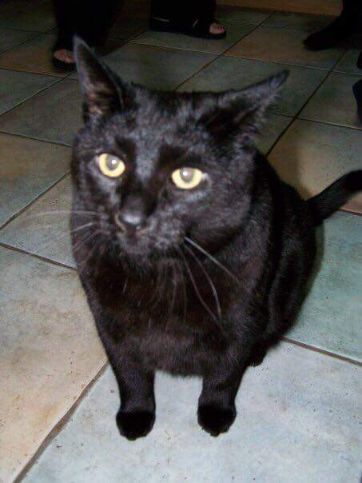

Portfolio Gallery
Each portrait is meticulously hand-drawn with professional grade colored pencils on high-quality paper
Portrait Details
-
Medium: Colored pencil on high-quality archival paper
-
Size: 9" x 12" (one pet) - $350.00 plus shipping
-
Time: Each portrait takes 12-15 hours to complete with a turnaround time of 4-6 weeks
-
Reference Photo: I work directly from a reference photo - the quality of your image is crucial for the best results
Reference Photo Guide
Quality Matters
The quality of your reference photo is vital to helping me capture your pet on paper. While candid or sentimental photos are meaningful, a good portrait must have spot-on details. Please ensure your photo is clear and well-lit so I can capture your pet's true personality.
Some of my favorite drawings have a unique point of interest, like a tongue sticking out, a signature collar, or an ear that's flipped inside out. Have fun with the photos!
Ideal Head Shots
- Natural sunlight for excellent lighting.
- Clear facial details, showing each strand of fur.
- Visible pupils and eye reflections for a lively drawing.
- Full view of face and torso.
- Eye-level shots taken in close proximity.

Avoid Blurry or Distant Images
- Candid shots may hold sentimental value, but portraits need sharp details.

Blurry/poor lighting
Avoid Poor Lighting or Shadows
- Poor lighting hides details; shadows obscure eyes. Ensure pets face a light source.
- Colors may appear incorrect, like auburn hair looking black, or textures misrepresented.
Avoid Photos Taken at an Awkward Angle
- Unflattering angles can distort a pet's appearance, like an elegant cat looking odd.
- Common angles may not translate well to drawings, causing unnatural proportions.

"Some of my favorite drawings have a unique point of interest, like a tongue sticking out, a signature collar, or an ear that's flipped inside out. Have fun with the photos!"

{kind=link}
{kind=link}
{kind=link}
{kind=link}
{kind=link}
{kind=link}